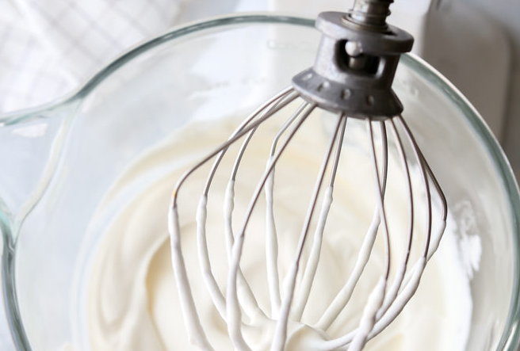
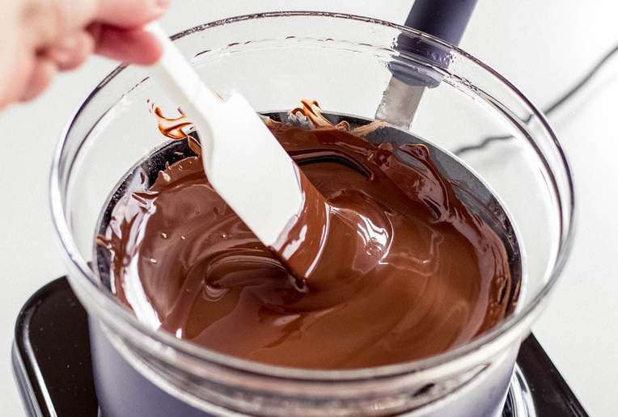
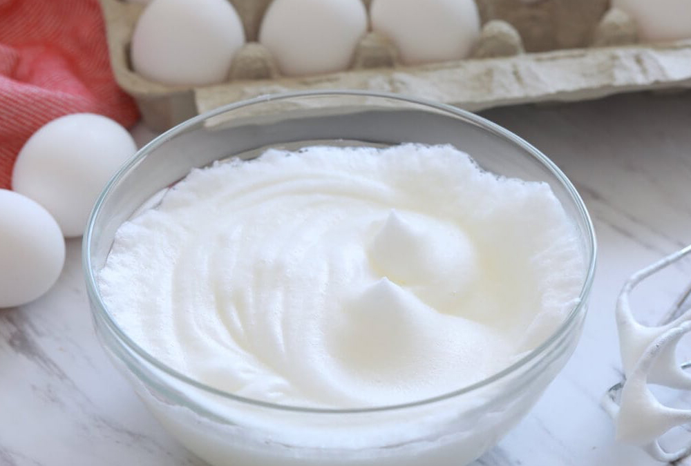
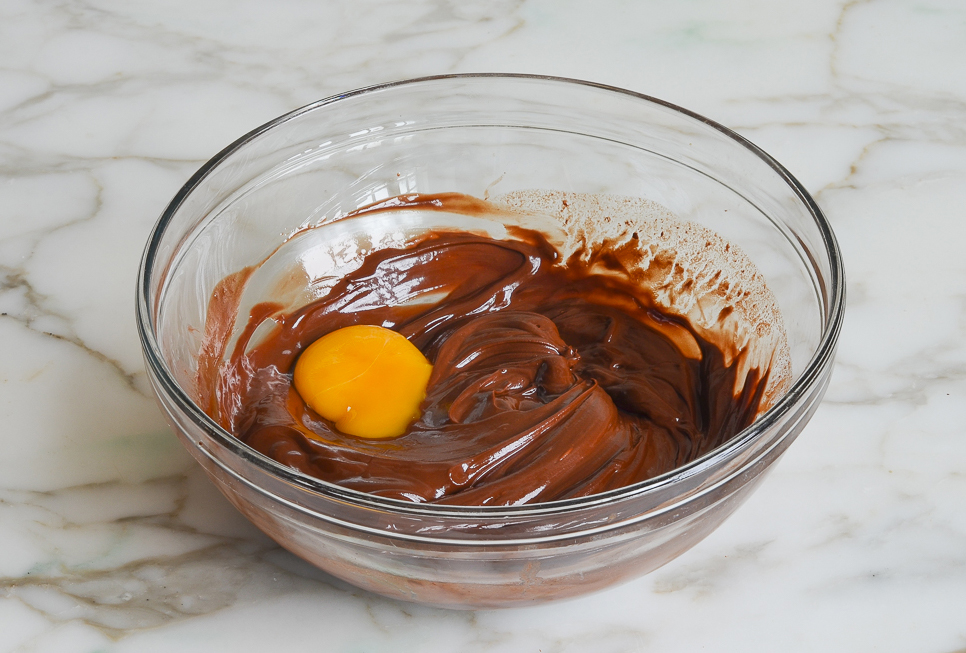
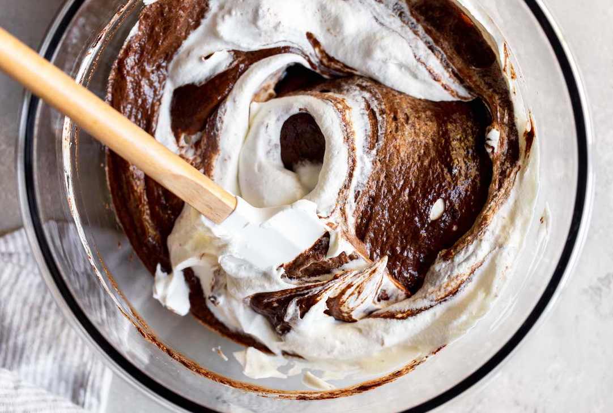
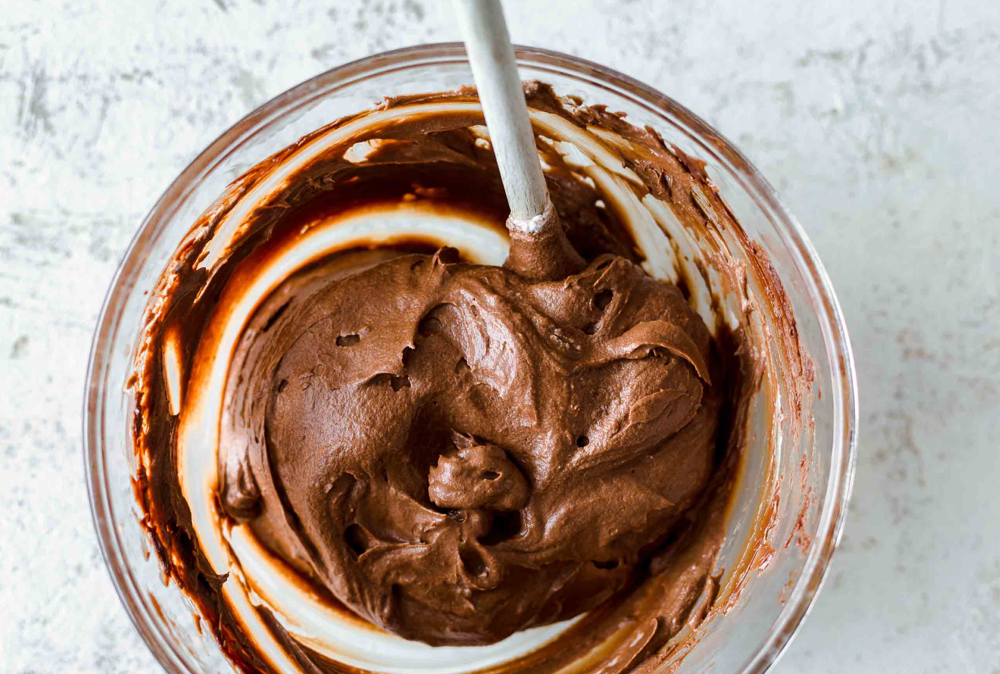

*this recipe uses raw eggs, if you are concerned about salmonella risks, use pasteurized eggs
This rich and creamy chocolate mousse recipe from Elise Bauer is the perfect dessert for special occasions. Anyone can make it and it is guaranteed to impress! Make sure you read all of the steps before you start cooking so that you are aware of certain time and temperature sensitive steps.
1. Whip the heavy whipping cream until it forms soft peaks. Chill in refrigerator while you move on to the following steps.
2. Melt the chocolate, cubed butter, and espresso in the top of a double boiler over hot, steamy water. Stir continuously until smooth. Remove the chocolate mixture from the heat and let cool until it is warm to the touch. Do not let the mixture get too cool.
3. Whip the egg whites until they are foamy and hold shape. Sprinkle in the sugar and whip until it forms stiff peaks.
4. While the chocolate is still warm, stir in the egg yolks.
5. Gently stir one third of the whipped cream into the chocolate mixture. Then fold in half of the egg whites. Fold in the remaining egg whites. Fold in the remaining whipped cream.
6. Chill in refrigerator for 8-25 hours. You can use a piping bag to create a fancy texture or just scoop directly into serving dishes. Top with whipped cream, raspberries, or your favorite fruit and serve!
